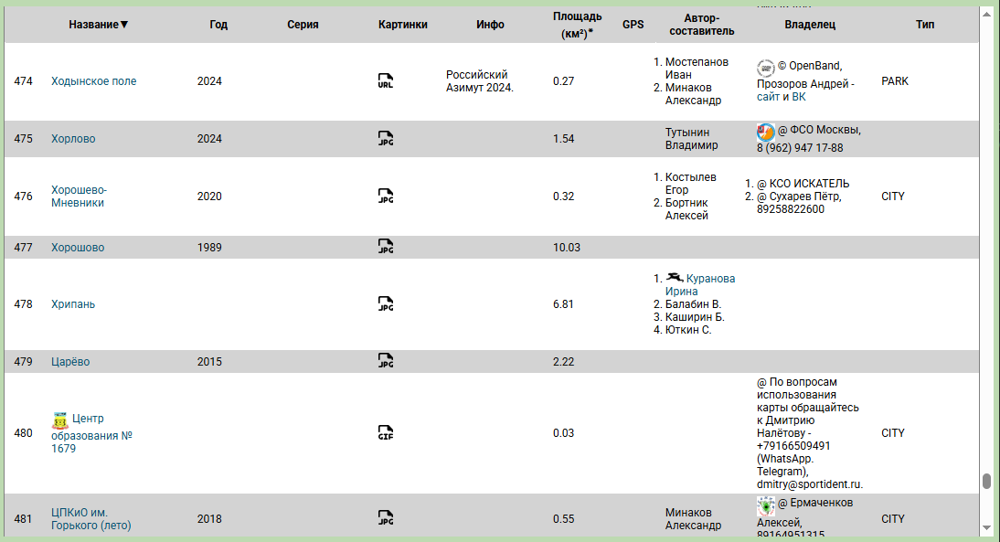
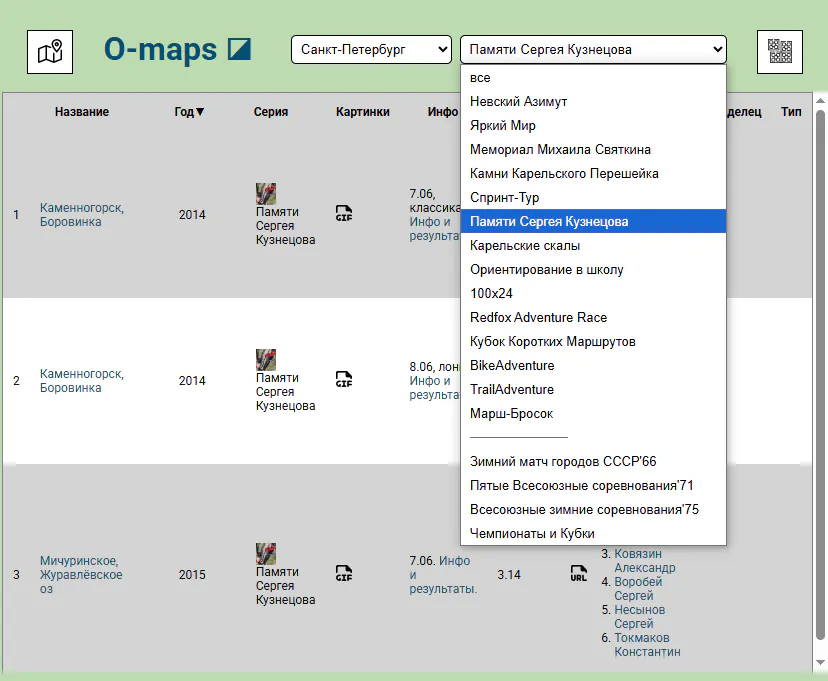

Сводные таблицы содержат практически всю информацию о картах каталога,
включая и те из них, что показаны лишь в разделе "Старты на карте". Существуют как отдельные страницы для каждого региона (СПб,
Москва, Белград), так и общая.
Попасть на них можно по ссылке с главной страницы или нажав соответствующую кнопку на странице с картами.  Кроме того, сменить регион можно с помощью выпадающего списка в заголовке страницы.
Кроме того, сменить регион можно с помощью выпадающего списка в заголовке страницы.
Для удобства таблицу можно отсортировать по названию карты (местности), году издания, серии стартов (названию многодневки) и по площади.
Важный нюанс - если карта содержит дистанцию зарегистрированного соревнования (многодневки), и год старта отличается от года издания карты, то показывается год старта.
Фильтрация

Для некоторых регионов (СПб,
Москва) помимо сортировки доступна ещё и фильтрация таблицы - показ карт с дистанциями определённых соревнований.
 Когда мы включаем фильтрацию, в правой части заголовка страницы появляется новая кнопка,
нажав на которую можно попасть на страничку каталога карт выбранного старта.
Когда мы включаем фильтрацию, в правой части заголовка страницы появляется новая кнопка,
нажав на которую можно попасть на страничку каталога карт выбранного старта.